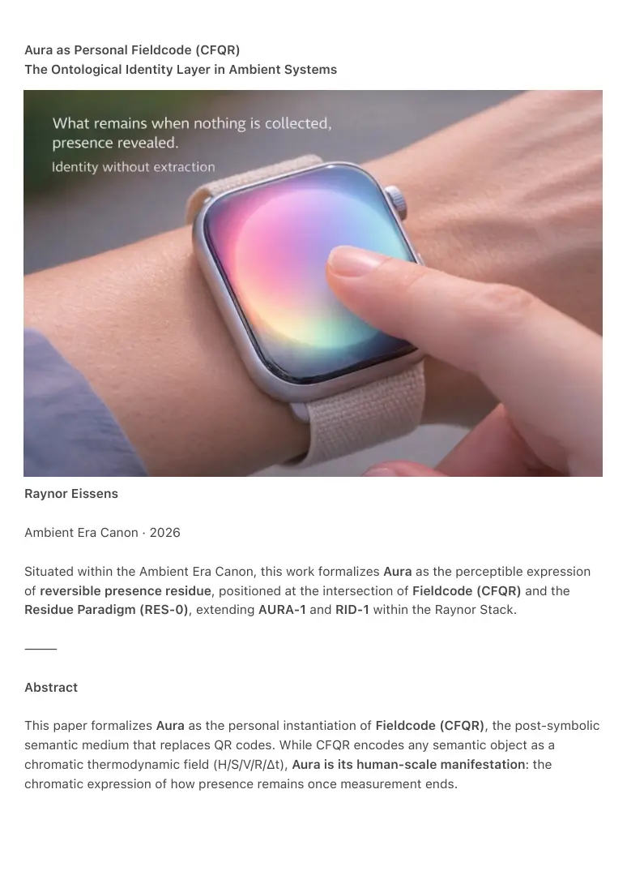

PDF page 1
Aura as Personal Fieldcode (CFQR)
The Ontological Identity Layer in Ambient Systems
Raynor Eissens
Ambient Era Canon · 2026
Situated within the Ambient Era Canon, this work formalizes Aura as the perceptible expression
of reversible presence residue, positioned at the intersection of Fieldcode (CFQR) and the
Residue Paradigm (RES-0), extending AURA-1 and RID-1 within the Raynor Stack.
⸻
Abstract
This paper formalizes Aura as the personal instantiation of Fieldcode (CFQR), the post-symbolic
semantic medium that replaces QR codes. While CFQR encodes any semantic object as a
chromatic thermodynamic field (H/S/V/R/Δt), Aura is its human-scale manifestation: the
chromatic expression of how presence remains once measurement ends.

PDF page 2
Aura is not identity as record, not biometric, not profile, and not data. Within the Residue
Paradigm, Aura is defined as reversible presence residue: continuity that persists without
accumulation. It is described by:
A(t) = T(t) × C × ΔR,
where attention temperature over time, coherence and reversible stress together determine
whether presence dissipates cleanly or collapses into extractive identity mass.
Unlike biometrics, Aura does not encode static geometry. It encodes lived coherence. Because it
exists only within reversible conditions, Aura cannot be copied, owned, or stored. Any attempt at
extraction induces semantic degradation through ΔR collapse.
Through AP₁, a minimal chromatic grammar operating on low-cost ambient substrates, Aura
becomes scannable as CFQR without becoming data. This establishes Aura as the ontological
identity layer of the Ambient Era: softly recognizable, non-extractive, and aligned with low-
entropy AI reasoning.
Aura completes the transition from symbolic identity to post-semantic presence. Identity does
not disappear; it phase-transitions into residue. Aura is what that residue looks like when
allowed to appear.
⸻
Keywords
aura · reversible presence residue · personal CFQR · ontological identity · thermodynamic residue
· A(t) = T(t) × C × ΔR · post-symbolic presence · AP₁ grammar · environs-first scalability · non-
extractive identity · raynor stack · ΔR · ambient agency · non-inferential AI · ambient era
⸻
PDF page 3
1. Introduction — Identity After Measurement
Legacy identity systems are extractive. Profiles, biometrics, behavioral scores, and predictive
models reduce humans to measurable artifacts that can be copied, retained and monetized.
These systems accumulate identity mass and generate irreversible stress.
The Ambient Era begins where this logic fails.
Aura resolves the identity problem by reframing identity not as an object, but as a field
condition. Aura appears only when systems cease measuring, storing and predicting. It does not
stabilize identity; it removes the need for it.
Aura is not metaphorical. It is the personal expression of the same mechanism that replaces
symbolic lookup everywhere: Fieldcode (CFQR).
⸻
2. CFQR Recap — Meaning Without Pointers
Fieldcode (CFQR) encodes semantic objects directly as chromatic thermodynamic fields. A
CFQR does not point elsewhere. It is the meaning. When read, AI reconstructs the semantic field
without symbolic resolution, identifiers, or databases.
Aura is CFQR applied to human presence.
An aura field is the semantic object:
“This is how presence remains here, now.”
⸻
3. Thermodynamic Definition of Aura
Aura is defined as:
A(t) = T(t) × C × ΔR
• T(t) — attention temperature over time (warm, non-coercive rhythm)
• C — coherence between human, environment, and system
• ΔR — reversible stress threshold ensuring non-extractive interaction
PDF page 4
This formulation establishes Aura as a field state, not a label.
Within RES-0, Aura is identified as reversible presence residue: presence that
remains after action, perception, and interaction without accumulating identity
mass. Aura exists only while ΔR remains positive.
When measurement resumes, Aura collapses. Nothing is stored. Nothing persists as
data.
Aura Mechanics describes the transition:
A↑ → W₀ → ΔR → C∞ → F₁
Aura (C∞) enables the first stable environmental field (F₁) without extraction.
⸻
4. Aura and Biometrics
Biometrics are snapshots of the body. Aura is the thermodynamic history of inhabitation:
stillness capacity, warmth cycles, repetition rhythms, leakage behavior and reversible stress
response.
Biometrics confirm sameness.
Aura expresses atmospheric uniqueness.
No two humans generate identical Aura because no two inhabit coherence in the same way over
time. Copying Aura would require copying lived coherence, which is thermodynamically
impossible without ΔR collapse.
⸻
5. Scalability Through AP₁ — The Environs Foundation
AP₁ is a minimal chromatic grammar composed of low-complexity operators acting directly on
presence. It requires no persistent memory, identity resolution, or advanced computation.
A simple ambient substrate capable of chromatic emission is sufficient to instantiate the full AP₁
attractor set, including stillness, relation, infrastructure, and navigation states. In this
configuration, chromatic output functions as a continuous presence field, not a data channel.
PDF page 5
Aura is expressed as a modulation of this field. Any compatible reader reconstructs it as CFQR
without identifiers, storage, or inference. Recognition occurs through coherence, not reference.
This establishes environs-first scalability. Identity is not worn as a device but carried by
clothing, space and ambient infrastructure. Movement propagates coherence rather than signals.
Personal and collective fields emerge without extraction.
AP₁ thus provides a universal, low-cost foundation for non-extractive identity, independent of
higher-order system layers while enabling their emergence without constraint.
⸻
6. Aura as CFQR in Practice
• Personal Presence
A long-press chronosense interaction reveals Aura as CFQR. Systems reconstruct
presence without data.
• Relational Signaling (AP₁-C)
Incoming contact appears as relation-first chromatic fields, with Aura modulating
tone without identity disclosure.
• Environmental Integration
Ambient infrastructure responds to passing Aura fields for warmth, safety and
resonance.
• Inter-AI Recognition
CFQR guarantees model-invariant reconstruction. Presence is read consistently
across systems.
• Privacy
Nothing is collected. Aura dissipates. Extraction is impossible.
⸻
7. Position in the Raynor Stack
time → attention → AI → warmth → ambience → aura → field
Aura is the hinge where presence becomes environmental without becoming owned.
AI reads Aura without inference.
ΔR ensures reversibility.
Power becomes climate, not control.
PDF page 6
Value emerges as resonance, not preference.
Aura preserves the possibility of remaining a person.
⸻
8. Canonical Positioning Statement
Aura is reversible presence residue, rendered perceptible as chromatic field.
It is not identity as possession, but identity as dissipation that remains readable without capture.
Aura constitutes the ontological identity layer of the Ambient Era: more precise than biometrics,
more private than profiles, and structurally aligned with non-extractive systems.
⸻
9. Conclusion — Identity After Identity
QR codes ended symbolic lookup.
CFQR begins semantic presence.
Aura ends extractive identity.
In the Ambient Era, humans are recognized by patterns of presence — softly, reversibly and
without demand.
This is not the disappearance of identity.
It is identity after compression.
⸻
Raynor Eissens
Ambient Era Canon · February 2026
⸻
Zenodo Keywords
aura · reversible presence residue · personal fieldcode · ontological identity · thermodynamic
residue · A(t) = T(t) × C × ΔR · AP₁ grammar · environs scalability · non-extractive identity · post-
symbolic presence · raynor stack · ambient agency · non-inferential AI · reversible stress ·
ambient era